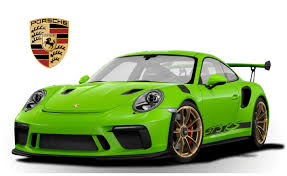
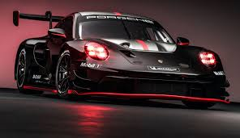
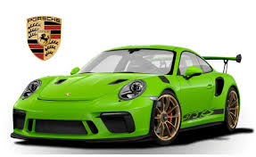
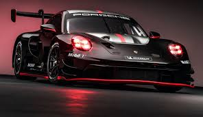

The history of the Porsche automobile brand began in 1948 with the Type 356, but the groundwork for the company was laid in the design office of Professor Ferdinand Porsche. The first order book in 1930 recorded the start-up phase of a legend in the making.
It sits unremarkably in a gray safe in a climate-controlled room: the first ledger of the Porsche design office, stored in a fireproof room in the archive of the Porsche Museum. In the timeworn ledger one can find order number 1, placed on August 21, 1930. The job involved manufacturing individual components for a “Hesselmann engine,” a cross between a diesel and a gas engine—a sign of the company’s innovative spirit since its inception. Order number 7 was of another dimension altogether. “Small-car project,” reads the description in the ledger. The Wanderer company planned to motorize the masses and needed a concept with which it could economically and inexpensively develop what was then considered a luxury item into a Volks-Wagen—a car for the people. A clever idea, as history would demonstrate. The order book provides an illuminating look at how Ferdinand Porsche and his small team of just nineteen employees embodied the vision of design creativity.
 


